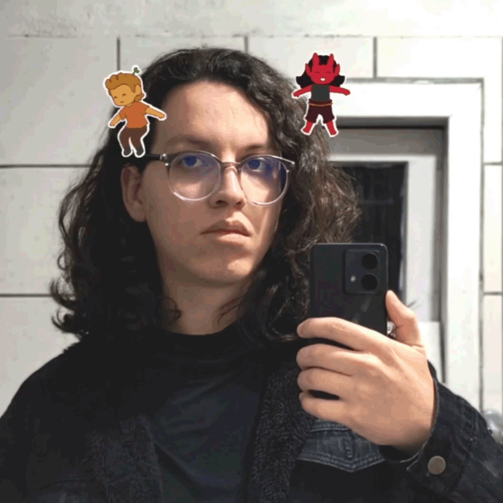

Pular para o conteúdo
Peduardo
.
Obras
Galeria

Paulo Eduardo M. S.
Brincando com os gatos.
Obras e projetos
Eu. | Contato
Outras histórias
Ative o JavaScript para carregar as obras e suas informações.
×